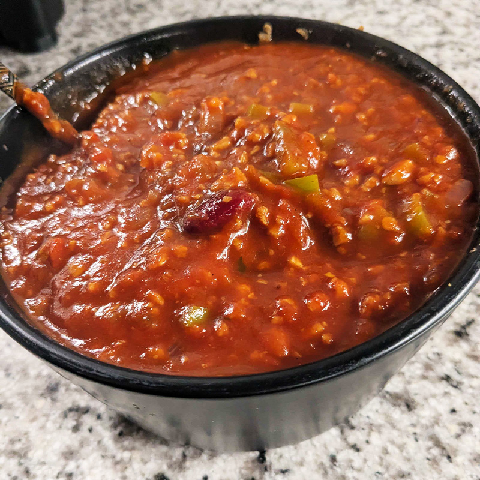

Vegan Chili

This hearty vegan chili is packed with protein-rich beans, tender vegetables, and a blend of warm spices like cinnamon, and smoked paprika. The secret touch? A handful of Lilys Dark Chocolate Chips, melted in at the end to add depth, richness, and a subtle sweetness that perfectly balances the heat.
Ingredients
- 1TBS extra-virgin olive oil
- 1 purple onion
- 8 cloves garlic
- 1 cinnamon stick
- 1TBS Mckormick chili mix
- 1 cup Textured Vegetable Protein (or TVP for short)
- 1 red bell pepper
- 1 green bell pepper
- 1 jalapeno
- 1 15oz can red kidney beans, undrained
- 1 29oz tomato sauce
- 1 13.8oz can crushed tomatos and basil
- 1/2cup red cooking wine
- 1/2cup vegetable broth
- 2TBS Lily's brand dark chocolate baking chips
- 2tsp vegan beef bouillion
- 1TBS brown sugar
Directions
- Rehydrate your TVP according to package instructions. Add in your vegan beef boullion to this mixture as well. Set aside.
- Coat your pan with a cooking spray of choice, then add in in your onion, garlic and cinnamon stick Just as it become fragrant add in your seasoning mix and sauté for another 2-3 minutes
- Next add your bell peppers and saute for another 3-4
- Next add your kidney beans, crushed tomatoes, red sauce, veg broth, wine and salt to taste.
- Mix and cover for 30 minutes on low heat.
- Lastly add your chocolate and brown sugar to the chili, stir and cover to let simmer for a little longer.
- Serve with your favorite toppings like green onion, vegan sour cream or cheese! Enjoy!
Go Home